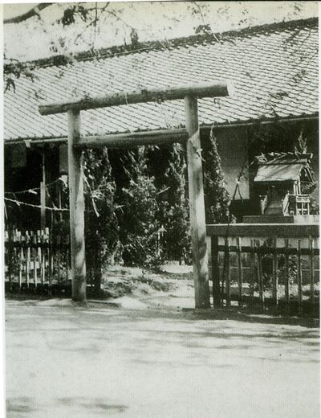
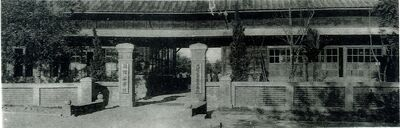
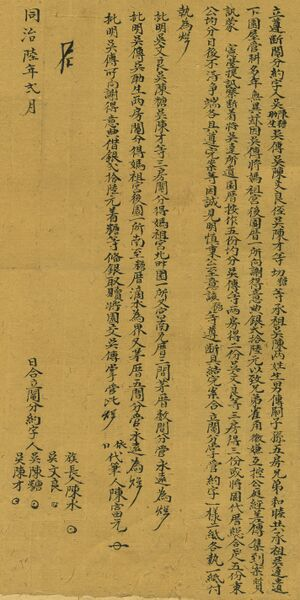

1898 民前十四年
※ 民前十四年(明治31年)三月：設立苗栗國語(日語)傳習所苑裡分教場,借用媽祖廟一間神廳為臨時教室使用(慈和宮左側廂房),入學兒童56名.四月苗栗國語傳習所甲科卒業生陳秉忠受命為雇員到職.九月末,擬廢分教場,日文教育不張,幸得大甲辦務署長熊谷氏誠懇督勵及王加芳蔡振豐兩氏熱心斡旋,經苗栗第二堡各街庄長及有志人士協商,決議設立苑裡公學校,23日由苑裡街長鄭文合具名稟呈臺中縣知事認可.

※ 民前十四年九月依「台灣公學校規則」更名為苑裡公學校,學制為六年制,為日本當局為台灣人所設立的初等教育 機構,其維持經費及一般經費由各市街庄住民負責,教員薪俸及旅費則由地方歲收支付,校舍仍在慈和宮內.

※ 原任分教場教諭日籍岩邊知言先生任第一任校長,陳秉忠為雇教員,王加芳及蔡振豐.邱有財三名為教務委員,於民前十四年十月就任,主持有關創校事宜,斡旋各計畫之實施,苑裡辦務署長淺井元齡及內務課長主記日野國康協助甚多,王加芳及蔡振豐等諸民協助管理人民寄附金(捐款).
1899 民前十三年
※一月舉行第一次學年測驗,二月招募新生入學,增加40人,共在籍97人.學生因家貧.或因工作或放縱懶惰等缺席,累月達12人,令其退學.四月四日前苗栗國語傳習所甲科卒業生鄭炳庚任教職員.
※民前十三年三月：廟旁興建一間教室（七坪大）,費用計三百二十七丹二十三錢,全由人民募款所得.
※五月十六日設置速成科,於每日教授2小時,修業滿一年結業,採附近正科生青年利用餘暇教導日語,入學學生增29人,此時全校共123名學生.
1900 民前十二年
1901 民前十一年
※二月舉行第三次學年測驗.三月退學4名,入學28名,本科學生總數102名,編成三學級.八月舉行速成科卒業試驗,及格17名,頒發卒業證書.
※民前十一年九月：修理校內原有觀音堂為辦公室,並修繕宿舍一間.
1902 民前十年
※二月舉行第四次學年試驗.
※民前十年六月：設立通霄分校（民前六年獨立）
※九月二十二日通霄分校開始上課,經費由通霄內湖白沙墩三區分擔收支.
※十月因校舍改建需要,經學務委員王加芳及蔡振豐,苑裡街長鄭文合 山腳街長鄭文約及有志之士鄭聰霖 蔡左泉議決以寄附募款方式進行,28日邀集苑裡山腳兩區有志富豪於校內協商,席上鄭文合等22名承諾寄附金額,當場募得約一千丹金額.
※十二月,苗栗廳通令王加芳 蔡振豐 鄭文合 鄭文約 鄭聰霖 蔡左泉為本校建築委員.
1903 民前九年
※二月中,校舍建築費達成募款三仟丹,建築委員六人具名致各寄附者申謝.
※民前九年七月第二任校長秋山祐一郎就任
※建校舍於現址,縣有地2.2023公頃,部分校地(今活動中心以南至慈和宮北畔)由地方士紳熱心人士陳文連陳文糖陳文良昆仲捐獻(校內立有石碑記載).

1904 民前八年[第1屆]
※ 民前八年三月：舉行第一屆畢業典禮，畢業生共三名
1905 民前七年[第2屆]
1906 民前六年[第3屆]
1907 民前五年[第4屆]
※ 民前五年十一月：新建二間教室、ㄧ間辦公室及廁所
1908 民前四年[第5屆]
1909 民前三年[第6屆]
1910 民前二年[第7屆]
※民前二年三月第三任校長上原宗五郎就任